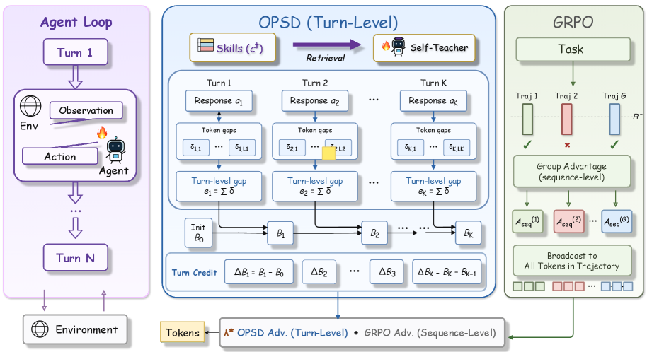
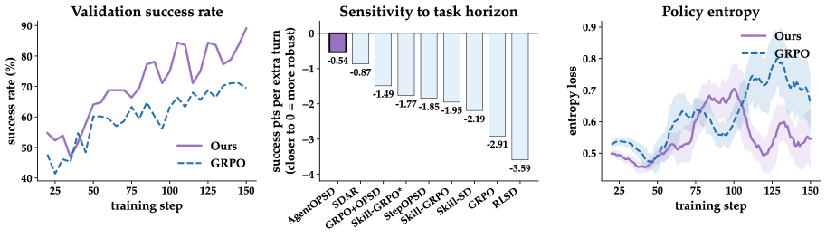

AgentOPSD: Recursive Self-Distillation for Agentic RL
TL;DR
- "AgentOPSD: Recursive Self-Distillation for Agentic Reinforcement Learning" (arXiv 2608.05987; Zi-Han Wang, Zhengxi Lu, Zhiyuan Yao, and 10 further authors — Tsinghua/Zhejiang/Meituan; code released) attacks the core weakness of GRPO-style agentic RL: one trajectory-level advantage broadcast uniformly over every token cannot tell the pivotal turn from the routine one.
- The mechanism is critic-free and needs no extra rollouts: score each turn by how much a privileged self-teacher (the same policy, conditioned on a training-only retrieved skill) prefers the action over the unconditioned policy, accumulate that evidence in a decaying Bayesian belief state in log-odds space, and reweight GRPO's advantage per turn by each turn's marginal belief revision — pivotal turns are the ones that move the belief.
- On ALFWorld, WebShop, and Search-QA with Qwen2.5-3B/7B, AgentOPSD beats GRPO and eight skill/self-distillation baselines: 89.1% ALFWorld success at 7B, and at 3B it lifts ALFWorld 75.0 → 84.4, Search-QA 36.4 → 46.7, and WebShop score 79.8 → 90.4 over GRPO — with no skills used at inference.
Why this matters
Turn-level credit assignment is arguably the open problem in long-horizon agentic RL, and this tracker has been watching its two lineages converge for months. From the RL side, TRACE and GiGPO (both tracked) build turn/step-level advantages from grouping and anchor states, but need either extra structure in the rollouts or matching anchor states. From the distillation side, the OPSD/privileged-distillation line — β-OPSD, FutureBridge-OPD, TCOD teacher replay — provides dense token-level teacher signals but no principled account of sequential credit: a per-token log-prob gap says the teacher disagrees, not whether this turn mattered for the outcome.
AgentOPSD is the cleanest synthesis of the two lines so far. It keeps GRPO's machinery untouched (same rollouts, same clipped loss, same group advantage) and uses the self-distillation contrast purely as an evidence stream feeding a recursive Bayesian filter. Two properties make it notable for anyone building agentic post-training stacks: the teacher is the policy itself with privileged context (no second model, no extra forward passes beyond scoring with the skill prepended), and the credit signal is explicitly history-dependent — the same local evidence counts more when the outcome is still uncertain and less once support has saturated, which is exactly the intuition value functions were supposed to provide before everyone went critic-free. Ablations attribute the gains specifically to turn-level aggregation and the recursive belief update, i.e., to the credit construction rather than the privileged information itself.
The core idea
GRPO computes a sequence-level advantage per trajectory \(i\) in a group of \(G\) rollouts and gives it to every token. AgentOPSD asks: which turns earned it?
Directly measuring a turn's counterfactual contribution is intractable, so the paper takes a hindsight-evidential view. Let \(C\) be the event that the trajectory succeeds. Bayes' rule says an action's effect on the belief in success is a likelihood ratio; AgentOPSD approximates it with a computable self-teacher contrast. For token \(t\) of turn \(k\), with student context \(h_{k,t}=(s_k,y_{k,<t})\) and privileged context \(h^+_{k,t}=(s_k,c^+,y_{k,<t})\) where \(c^+\) is a training-only retrieved skill:
so the turn-level evidence \(e_k\) is the log-ratio by which the skill-conditioned "teacher" branch prefers the whole action \(a_k\) over the unconditioned student — a tractable proxy for the ideal Bayes factor \(\log\frac{p(a_k\mid s_k,C)}{p(a_k\mid s_k,\neg C)}\) (conditions in the paper's Appendix A.1).
Evidence alone isn't credit: the same \(e_k\) can be pivotal or redundant depending on what came before. So the belief state is updated recursively in log-odds space with decay \(\gamma\in(0,1]\), anchored at the group success rate \(\bar R = S/G\):
where \(\sigma\) is the sigmoid and \(\epsilon_0=10^{-4}\) keeps log-odds finite for all-correct/all-wrong groups. A turn's importance is its marginal belief revision:
new evidence net of decayed carry-over, gated by the state sensitivity \(B_{k-1}(1-B_{k-1})\): evidence moves the belief most under uncertainty and is suppressed once support saturates. Aligning with the verifier gives the credit \(q_k=\operatorname{sign}(A_{\mathrm{seq}})\,\Delta B_k\), which is standardized within the trajectory and applied as a bounded multiplier:
with \(z_k\) the within-trajectory z-score of \(q_k\), \(b\in(0,1)\) the modulation bound, and \(\lambda\in[0,1]\) the reshaping strength. The multiplier stays strictly positive, so reshaping never flips GRPO's update direction — it only redistributes magnitude across turns. Tokens inherit their turn's \(\widetilde A_k\) inside the standard clipped policy-gradient loss; no separate distillation loss exists.
How it works

Figure 2 from the paper: (1) aggregate token gaps δ into turn evidence e; (2) recursively update belief B (initialized from the group success rate) and read off ΔB; (3) reshape the sequence advantage per turn. Right: vanilla GRPO broadcasts the same advantage to every token.
for each task x: sample G trajectories with π_θ (standard GRPO rollouts)
compute A_seq per trajectory from outcome rewards (group-normalized)
for each trajectory i:
B0 ← clip(group success rate, ε, 1-ε); c ← 0
for turn k = 1..K:
e_k ← Σ_t [ log π_θ(y_t | s_k, c+, y_<t) − log π_θ(y_t | s_k, y_<t) ]
# c+ = retrieved skill, training-only, detached
c ← γ·c + e_k
B_k ← σ( logit(B0) + c )
q_k ← sign(A_seq) · (B_k − B_{k−1})
z ← standardize(q_1..K within trajectory)
w_k ← clip(1 + b·z_k, 1−b, 1+b)
Ã_k ← A_seq · [(1−λ) + λ·w_k]
optimize clipped PPO/GRPO loss with token advantage Ã_{turn(t)}
# no critic, no extra rollouts; skills never used at inference
Results
At 3B (Qwen2.5-3B-Instruct), AgentOPSD posts the best averages on all three environments: ALFWorld 84.4% success (GRPO 75.0, GRPO+OPSD 81.2, SDAR 84.4 tied on avg but AgentOPSD wins Search-QA/WebShop decisively), Search-QA 46.7% (GRPO 36.4, best baseline 44.6), WebShop score 90.4 / accuracy 69.5 (GRPO 79.8 / 63.3). At 7B it reaches 89.1% ALFWorld success vs 81.2 for GRPO. Notably, plain OPSD without outcome rewards collapses on Search-QA (≈0%), and prompting with skills at inference (Skill-Prompt) is far worse than not using skills at all after RL — the paper's framing that the gain comes from credit construction, not privileged access is backed by ablations where removing turn-level aggregation, the recursive update, or the sign alignment each degrades results.

Figure 1 from the paper: (a) validation success over training; (b) horizon sensitivity — success points lost per extra turn, where AgentOPSD degrades least; (c) policy entropy.
The horizon-sensitivity analysis is the most interesting evaluation choice: regressing per-sub-task success against the mean turns of successful episodes, AgentOPSD loses the fewest success points per extra turn — direct evidence that better turn-level credit specifically buys long-horizon robustness, the regime where uniform broadcast is weakest.
How it connects
- TRACE (turn-level rewards) and GiGPO (added to the tracker today): three critic-free answers to the same credit-assignment question — TRACE from reward decomposition, GiGPO from anchor-state grouping, AgentOPSD from distillation-derived Bayesian evidence. AgentOPSD needs no repeated states (GiGPO's requirement) and no auxiliary reward model.
- FutureBridge-OPD and multi-turn OPD replay: the OPD lineage this builds on; FutureBridge validates teacher actions by rolling out futures, while AgentOPSD never injects teacher actions at all — the teacher only scores student actions, sidestepping teacher–student state-distribution mismatch entirely.
- Skill-retrieval line (SkillHone, MSCE, SkillRise): retrieved skills here become privileged training-time context rather than inference-time scaffolding — a third use of skill libraries beyond prompting and curriculum.
Critical take
The Bayesian story is elegant but the evidence stream is only as good as the retrieved skill \(c^+\): \(e_k\) measures "does this action look like what the skill describes," which correlates with success only insofar as the skill is relevant and correct — the paper concedes \(B_k\) is relative support, not a calibrated probability, and the approximation to the true Bayes factor holds in a \(\rho_k\to 0\) limit that is asserted rather than measured during training. Environments are the usual suspects (ALFWorld/WebShop/Search-QA) with short-to-medium horizons and binary outcomes; whether decaying log-odds accumulation survives 100+-turn terminal tasks (cf. today's RST tutorial) is untested. And since the multiplier never flips sign, AgentOPSD inherits GRPO's blindness to good turns inside failed trajectories — it redistributes magnitude, not direction. Still, as a drop-in reweighting that costs one extra scoring pass and consistently beats a crowded baseline field at two scales, the cost–benefit is unusually good.
If you remember three things
- Turn credit = marginal belief revision: aggregate privileged-vs-plain log-prob gaps into turn evidence \(e_k\), push it through a decaying log-odds filter anchored at the group success rate, and credit each turn by \(\Delta B_k\) — history-dependent credit without a critic or extra rollouts.
- The teacher is the student with better context: a training-only retrieved skill turns the policy into its own privileged teacher; skills are never used at inference, and the gains come from the credit construction, not the privileged access.
- Reshaping, not replacing: GRPO's advantage is modulated per turn by a strictly positive bounded multiplier \((1-\lambda)+\lambda w_k\) — never reversing the update — and this alone yields 89.1% ALFWorld at 7B and double-digit gains at 3B, with the biggest edge on the longest-horizon tasks.